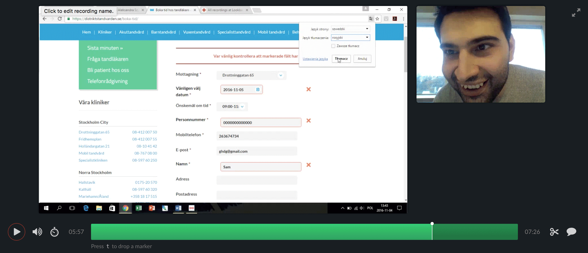
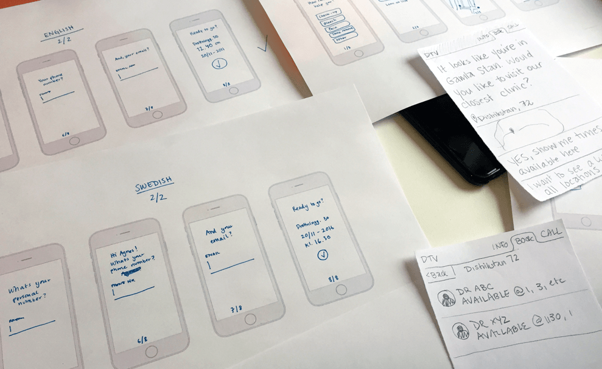
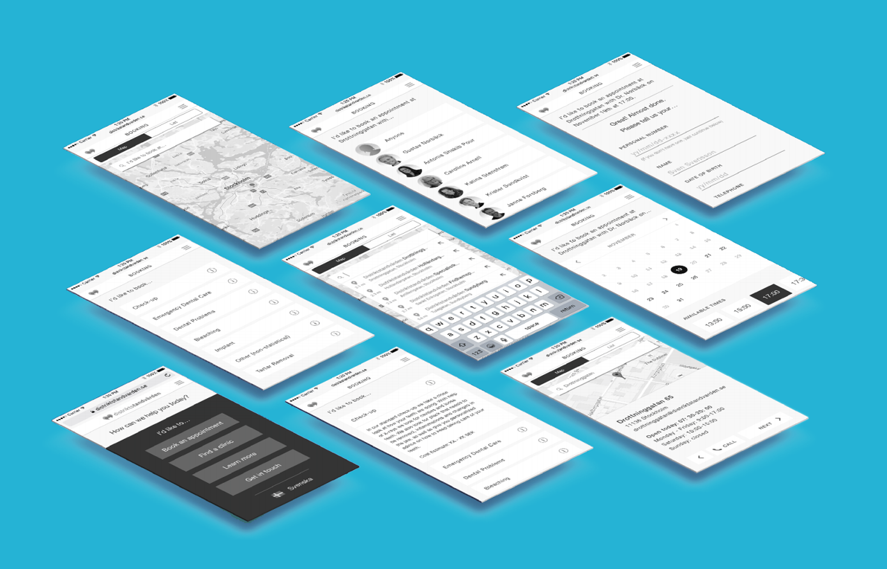

I was told to identify a user need, then critique how well the iOS or Android app currently serves that user need, and re-design an experience that fulfills that user need based on my critique.
What works?
What can be improved?

“A listener wants to browse, que, and preview songs”
A listener wants to be able to browse, que and explore music. Why? What metric would an improved browsing function do?
My assumption is that the user wants to feel in control, want it to be fast, and want to ---
Solving the problem that people don't have the energy to find new songs because it's too risky and takes too much time to find the right stuff, and it interupts your flow of listening.

I want to eliminate all unnecessary confusion and hazzle, in order for the user to feel more in control and more engaged with the app and the music.

I started listing all of the things that could possibly be in the way of making the user feel engaged and in charge.
Could improve:
I also listed things that I assume the user enjoys:
Good stuff:
I did a braindump on all of the possible solutions:
- Clear call to action
- Conversational interface
- Only show available times
- Option to go back
- Auto populate fields for speed
- Clear confirmation

Started on paper to make a fast vision of what's most important.

Get into Framer to get some interactive real feeling.

I got comments such as